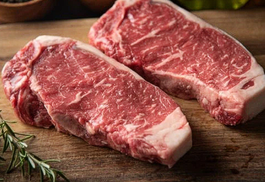
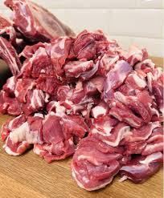
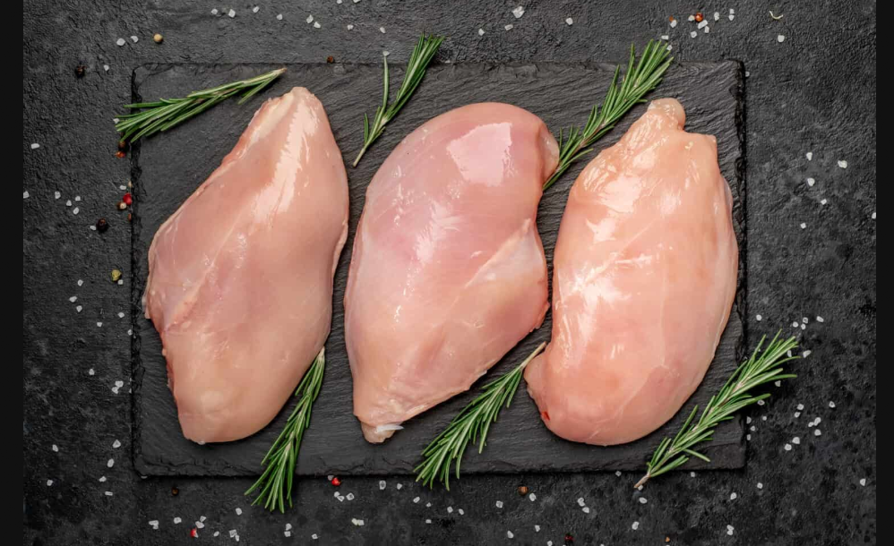

Premium halal beef, goat meat, mutton and chicken supplied fresh from trusted halal butchers in Nairobi.
View ProductsQuality Halal Meat Suppliers is a trusted halal butcher serving customers across Nairobi and surrounding areas. We provide fresh halal-certified beef, goat meat, mutton and chicken prepared by experienced halal butchers with reliable delivery.



Place your order quickly and easily using WhatsApp. Our team will confirm your order and arrange delivery anywhere in Nairobi.
Order Now